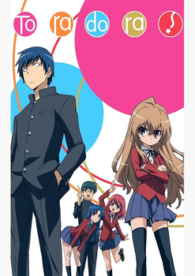
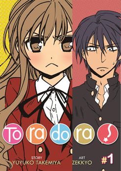
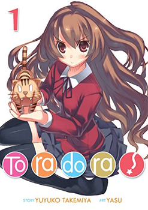
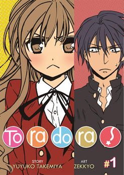
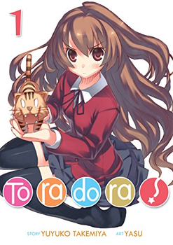

 



Sinopse
Ryuuji Takasu é um estudante gentil do ensino médio que adora o trabalho
doméstico; mas, em contraste com sua natureza gentil, ele tem um rosto intimidador que muitas vezes o
rotula de delinquente. Por outro lado está Taiga Aisaka, uma aluna pequena e parecida com uma boneca,
que é tudo menos uma garota fofa e frágil. Equipada com uma katana de madeira e personalidade agressiva,
Taiga é conhecida em toda a escola como a "Mini-Tigresa".
Um dia, um erro embaraçoso faz com que os dois alunos se cruzem. Ryuuji descobre
que Taiga realmente tem um lado doce: ela tem uma queda pelo popular vice-presidente, Yuusaku Kitamura,
que passa a ser seu melhor amigo. Mas as coisas só ficam mais loucas quando Ryuji revela que tem uma
queda por Minori Kushieda - a melhor amiga de Taiga!
Toradora! é uma comédia romântica que segue esta dupla estranha enquanto eles
embarcam em uma busca para ajudar uns aos outros com suas respectivas paixões, formando uma aliança
improvável no processo.
Anime
Atualmente, Toradora! tem uma temporadas com um total de 25 episódios. Ele foi lançado em 2 de outubro de
2008.
O anime está disponível no catálogo da Netflix e da Crunchyroll no Brasil.
O anime de Toradora! é
produzido pelo estúdio Genco (Sword Art Online, Elfen Lied, Golden Time).
Mangá
O mangá de Toradora, foi escrito pela Yuyuko Takemiya e ilustrado por Yasu, é publicado
na revista japonesa Dengeki Bunko desde março de 2006. 10 volumes foram publicados ao total.
A obra ja
foi concluída.
No Brasil, o mangá é publicado pela New POP.
Filme
Toradora! não tem filme, porem ele tem um jogo para a plataforma do PSP no qual o
nome é Toradora! portable.